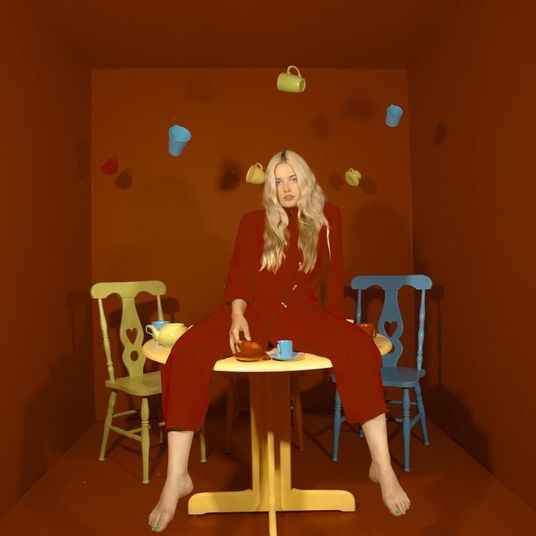
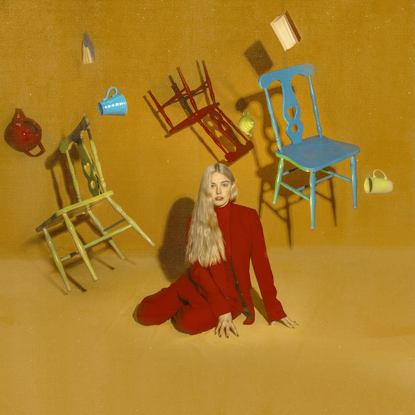
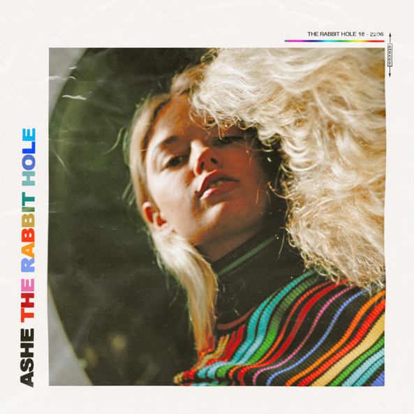

Discografia
Moral of The Story: Part 2
Moral of The Story: Part 2 é o EP mais recente, lançado por Ashe em 9 de Agosto de 2019, contendo 4 faixas
Moral of The Story: Part 1
Moral of The Story: Part 1 é um EP lançado por Ashe em 5 de Abril de 2019, contendo 4 faixas.
The Rabbit Hole
The Rabbit Hole foi o primeiro EP lançado por Ashe em 22 de Junho de 2018, contendo 8 faixas.